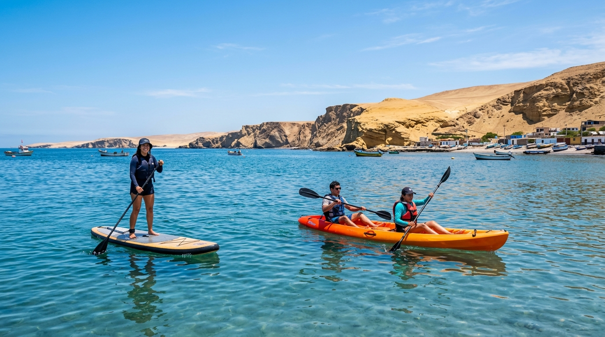

Detalles de la Aventura
La bahía de Paracas destaca por sus aguas extremadamente mansas por las mañanas, convirtiéndola en un espejo de agua perfecto para el kayak y stand up paddle (SUP).
Ofrecemos alquiler por horas para que explores a tu propio ritmo, así como tours guiados al amanecer para avistar aves y flamencos cerca de la orilla.
Una actividad ecológica, deportiva y sumamente relajante para iniciar el día sintiendo la brisa marina.
Modalidades y Equipamiento
-
rowing
Kayaks Simples y Dobles
Kayaks de travesía estables y fáciles de maniobrar, ideales para remar solo o en pareja.
-
surfing
Tablas de Stand Up Paddle
Tablas inflables y rígidas de gran estabilidad, perfectas para practicar equilibrio de pie o de rodillas.
-
wb_sunny
Turno del Amanecer
Remar entre las 6:30 AM y 9:00 AM te garantiza un mar sin viento, calmado como una piscina.
-
flutter_dash
Avistamiento Ecológico
Remando en silencio es posible acercarse a flamencos, pelícanos y otras aves costeras sin ahuyentarlas.
Preguntas Frecuentes
¿Cuánto cuesta el kayak o paddle en Paracas?
El alquiler cuesta S/ 60 e incluye kayak o tabla SUP, remo, chaleco salvavidas, bolsa seca para tus cosas y la charla técnica de seguridad. El guía acompañante en el agua es opcional con tarifa adicional.
¿Cuál es el mejor horario para remar?
Entre las 6:30 AM y las 9:00 AM la bahía está completamente calmada, como una piscina. Después del mediodía se levanta el viento Paracas y la remada se vuelve exigente, por eso solo operamos por la mañana.
¿Es difícil mantener el equilibrio en Paddle?
Nuestras tablas son de iniciación (anchas y estables), por lo que casi todo el mundo logra ponerse de pie en los primeros 10 minutos. Si te cuesta, puedes remar de rodillas de forma muy cómoda.
¿Se requiere experiencia previa?
Ninguna. Antes de ingresar al agua, nuestro personal te enseña a remar, girar y subir de nuevo a la tabla o kayak en caso de caída.
¿Se mojará mi ropa?
En kayak es común mojarse ligeramente por el salpicado del remo. En paddle existe la posibilidad de caer al agua. Recomendamos ropa de baño o deportiva de secado rápido y una muda seca para el final.
¿Qué fauna se puede ver desde el kayak?
Remando en silencio por la orilla es común acercarse a pelícanos, zarcillos, gaviotas y, en temporada, flamencos que se alimentan en la bahía. Lleva tu celular en la bolsa seca para las fotos.
Reservar Tour
S/ 60
Por persona
- check_circle Alquiler de kayak o tabla de stand up paddle
- check_circle Remos de carbono y chaleco salvavidas de uso obligatorio
- check_circle Bolsa seca para proteger tu celular u objetos de valor
- check_circle Charla técnica de remado y seguridad antes de ingresar al mar
- error Guía en el agua (opcional en modalidad tour, consultar tarifa)
* Disponible todos los días desde las 6:30 AM hasta las 12:00 PM. Se recomienda la mañana para evitar vientos fuertes (Paracas).
Por qué elegir SolyMar Paracas
Seguridad Garantizada
Equipos modernos y guías certificados con seguros de pasajeros para tu tranquilidad.
Guía Local Experto
Guías nativos bilingües que te mostrarán los secretos mejor guardados de la Reserva.
Agencia Registrada
Somos operadores turísticos formales autorizados por las entidades pertinentes del Perú.
Atención Personalizada
Coordinamos tu reserva por WhatsApp de inmediato resolviendo cualquier consulta.
¿Listo para comenzar tu aventura?
Contáctanos hoy mismo para asegurar tus espacios en esta maravillosa experiencia. ¡Tenemos salidas diarias!
Contactar por WhatsApp